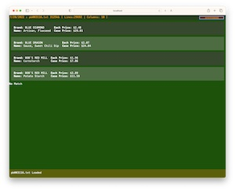
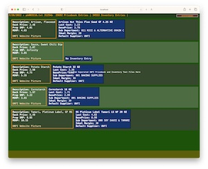
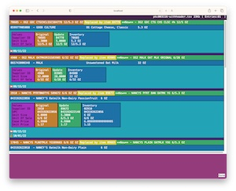
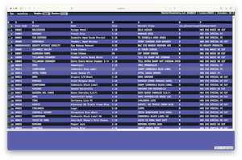
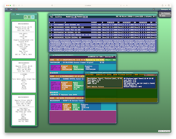

🔨 Data Tool
Tab Importer
Trims and assembles a comma seperated list of column data from a tab or comma delimited file
Primarily used in the wild for getting a list of identifiers from exported worksheets which can then be used for search and filtering.
Currently being developed for additional capabilities including larger file support.
Try it
- Open link
- Drop text file
- Toggle Comma/Tab button to choose data separator
- Toggle AutoTrim to attempt removing header and footer rows
- Adjust header and footer length with triangle buttons, reset with AutoTrim
- Double Click column header number to produce comma seperated list in lower pane

🔧 UNFI Tools
UNFI Pricer Lookup item pricing in pricebook file provided by UNFI.
Drop UFNI pricebook text file. Then input item ID in the input field and press enter to lookup pricing
Enlarge Screenshot
UNFI Pricer with Inventory 
Item Lookup for comparing pricebook and inventory data.
💁 Requires UNFI pricebook and custom inventory tab delimited files to demo.
UNFI Pack Change with Inventory 
View upcoming UNFI pack changes and compare to inventory.
💁 Requires UNFI packchange and custom inventory tab delimited files to demo.
Enlarge Screenshot
🧪 Experimental
👀 ⚠️ Use without expectation ⚠️
Tab Importer For Larger Files 
Like the above Tab Importer but should be able to handle very large files without making browser window unresponsive
👀 Can be quirky but worksAs development progresses, this will be used to import data objects that can be utilized by custom modules in the framework
Coopilot 
Web application workspace that can be installed locally or in the cloud
Contains the above tools together in a remotely accessible password protected workspace.
The Workspace and the full stack javascript framework used to build it are in an experimental development phase.
As such they are subject to many changes before community deployment is recommended.
Currently, Coopilot is being used to build the above standalone front ends. It is also utilized in a cloud compute instance to interface with an iOS application being developed.

Click these images to see full resolution screenshots
<-- Image on the left shows iOS app capturing a shelf tag through a closed glass door.
Image on the right shows captured barcode and image text, along with a note to check update -->
Image below shows the web interface with the above tools and scan data together in remote workspace ↓
The Coopilot Repository provides some configuration and instructions for building the standalone packages to be used individually, or the entire remotely accessible Workspace.